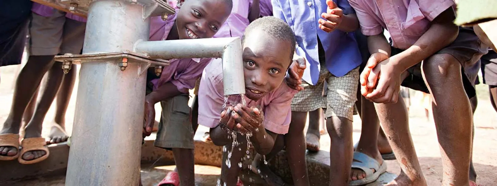
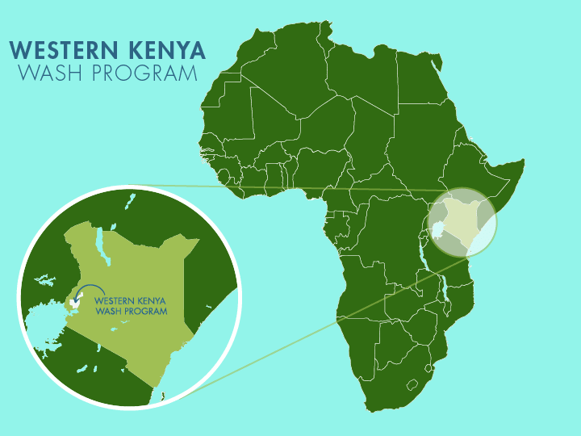
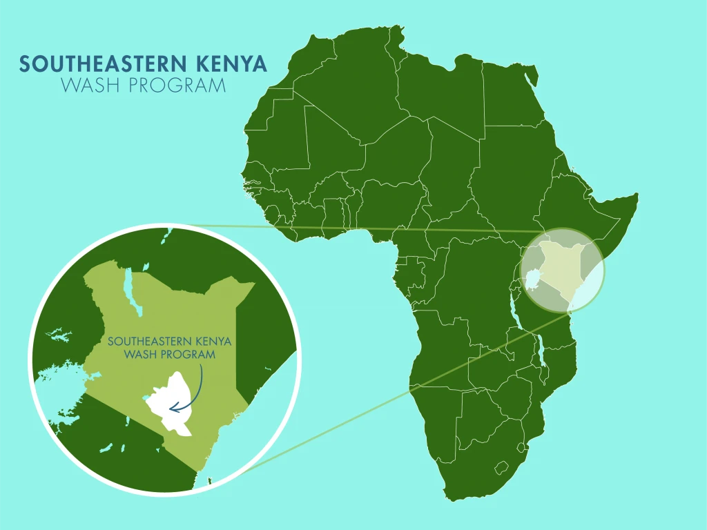
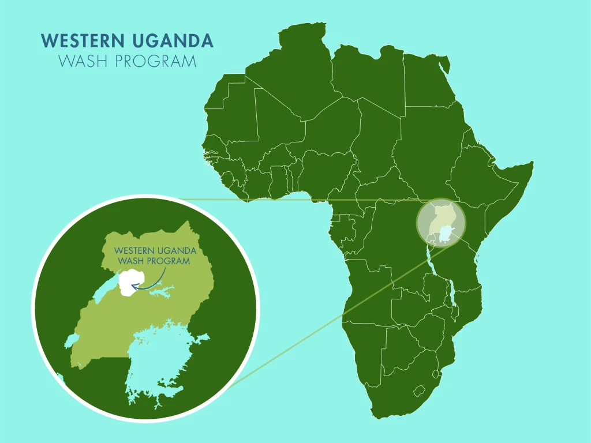
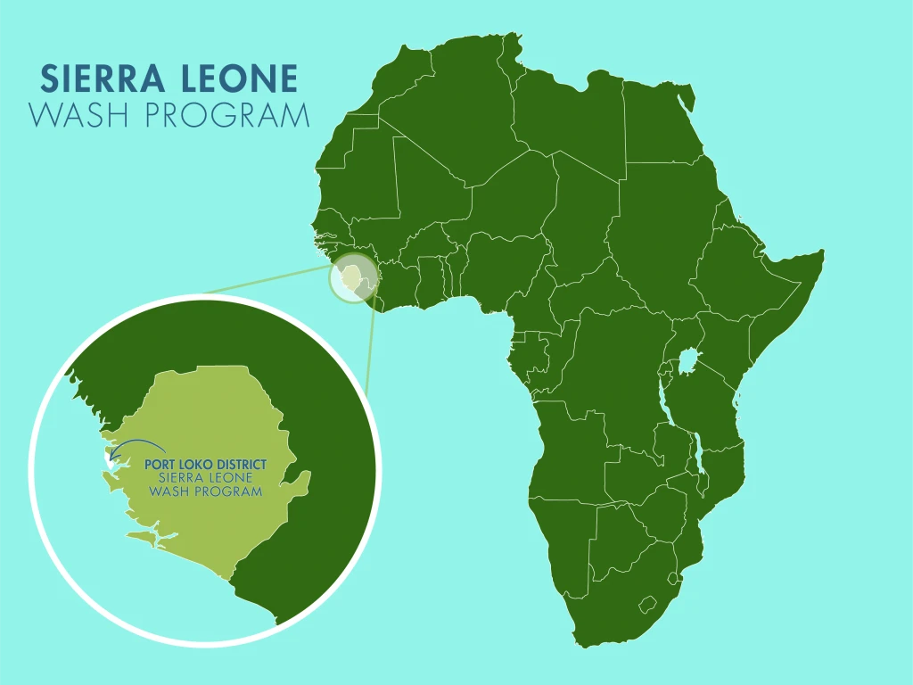

The Water Project is focused in four geographic regions across Kenya, Uganda, and Sierra Leone
The Water Project’s WaSH program in Western Kenya aims to access, protect, filter, and purify the abundant waters that are available through two seasonal rains, prevalent springs, high water tables, and deep aquifers in the region. Explore water projects in communities, schools, and churches in Western Kenya such as protected springs, rainwater catchment systems, and water wells. This program emphasizes the power of strategic geographical saturation of projects, effective hygiene and sanitation training, and relational networking between NGOs, health workers, local politicians, and educators.

The Water Project’s WaSH program in Southeast Kenya aims to restore water access for communities living in a semi-arid environment through the construction of sand dams, shallow hand dug wells, and 104,000 liter rainwater catchment systems. Explore projects in this region to learn about (how you can be involved in) innovative farming, education, hygiene and sanitation training, and reliable access to clean drinking water.

The Water Project’s WaSH program in Western Uganda aims to push the limits for local ownership of clean water access points and behavior change in sanitation and hygiene practices through contextual water development. Explore water projects like protected springs and water wells aimed at village-wide impact through complete-coverage water access and household level analysis of sanitation and hygiene practices. This program features an innovative approach that combines the Water User Committees (those with responsibility to care for water point maintenance) with a Village Savings and Loan Association.

The Water Project’s WaSH program in Port Loko district, Sierra Leone consists of a concentrated network of new, rehabilitated, and maintained water wells. Explore these projects that remain at or near 100% functionality because of quality implementation, customized hygiene, sanitation, and maintenance training, and reliable monitoring, evaluation, and resolution relationships.
